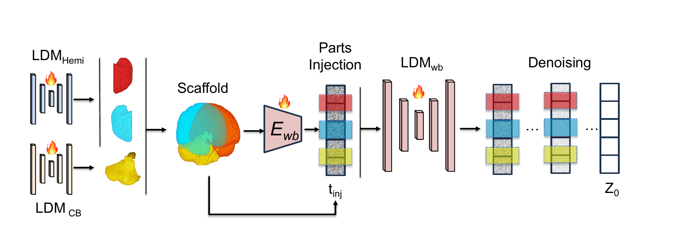
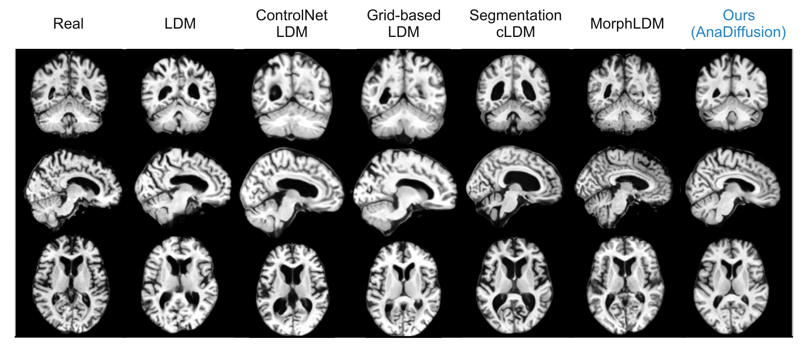
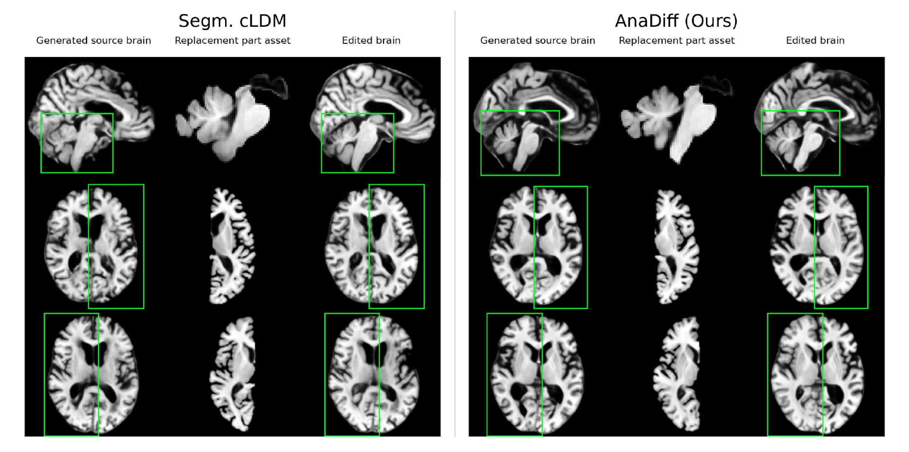

Generate parts
A shared, side-conditioned hemisphere model and a dedicated CB model capture local anatomical distributions.
Anatomically Compositional Latent Diffusion for Controllable 3D Brain MRI Generation
1Stanford University · 2Texas A&M University · 3University of Minnesota · 4University of Wisconsin-Madison · 5Johns Hopkins University · 6UTHealth Houston · 7Stony Brook University
Generate anatomy as explicit parts. Assemble a scaffold. Refine the whole while preserving local control.
Abstract
AnaDiffusion builds a 3D brain MRI from anatomical parts — left/right hemispheres and the cerebellum–brainstem — then assembles and globally refines them into one coherent volume, improving regional FID and enabling controllable part editing with no subject-specific segmentation maps at inference.
3D brain MRI generation has made significant advances for medical imaging, simulation, and controllable anatomical analysis. However, existing generative models typically synthesize 3D volumes monolithically, often overlooking regional anatomical structures and limiting local controllability.
Method
AnaDiffusion trains frozen part models and a whole-brain model, composes generated regional assets in image space, and injects the re-encoded scaffold into the reverse diffusion trajectory.

High-fidelity regional parts form a whole-brain scaffold. The scaffold is re-encoded into the whole-brain latent space and injected during denoising, enabling local anatomical detail and globally coherent synthesis.
A shared, side-conditioned hemisphere model and a dedicated CB model capture local anatomical distributions.
Part assets are placed in fixed MNI152-aligned supports while uncertain boundaries and CSF remain open.
The assembled image is encoded and inserted with 10 DDIM denoising steps remaining at inference.
The whole-brain denoiser synthesizes missing context and repairs interfaces without discarding the injected anatomy.
Interactive
One AnaDiffusion sample in 3D. Drag to rotate or move through slices, scroll to zoom — or drop your own .nii.gz onto the viewer. Switch to Assemble parts to see the left and right hemispheres and the cerebellum–brainstem snap into their world-coordinate positions.
Generation results
All methods are evaluated against 291 real held-out ADNI scans. Confidence intervals use 5,000 subject-cluster bootstrap replicates.

From left to right: Real, LDM, ControlNet LDM, Grid-based LDM, Segmentation cLDM, MorphLDM, and AnaDiffusion. The complete seven-column comparison is shown without cropping.
MedicalNet FID is reported as FID ×104. SynthSeg metrics report absolute Cohen's |d|. Mean [95% confidence interval]. Lower is better.
| Method | MedicalNet FID | SynthSeg Cohen's |d| | ||||||
|---|---|---|---|---|---|---|---|---|
| WB | Left Hemi | Right Hemi | CB | Seam | Ventricles | Cerebellum | Brainstem | |
| VAE-GAN Rosca et al., 2017 | 134.400[89.820, 190.754] | 39.645[27.536, 53.880] | 20.415[13.470, 29.582] | 4.394[3.690, 5.236] | 0.808[0.639, 1.059] | – | – | – |
| HA-GAN Sun et al., 2022 | 339.306[298.525, 380.590] | 68.284[60.309, 76.616] | 74.447[66.201, 82.778] | 8.705[7.573, 9.935] | 2.218[1.848, 2.622] | – | – | – |
| LDM Pinaya et al., 2022 | 40.92[26.71, 58.86] | 7.10[4.26, 10.85] | 6.87[4.51, 9.57] | 1.68[1.17, 2.29] | 0.44[0.28, 0.63] | 0.184[0.007, 0.523] | 0.370[0.036, 0.747] | 0.222[0.011, 0.540] |
| Seg. cLDM Dorjsembe et al., 2024 | 59.47[32.72, 90.83] | 14.54[8.31, 21.92] | 9.22[4.79, 14.59] | 1.45[0.81, 2.30] | 0.49[0.30, 0.73] | 0.421[0.111, 0.725] | 0.207[0.010, 0.509] | 0.178[0.008, 0.489] |
| MorphLDM Wang et al., 2025 | 46.65[29.85, 70.74] | 8.56[5.90, 12.98] | 18.05[15.54, 21.27] | 2.23[1.88, 2.62] | 0.99[0.72, 1.35] | 0.131[0.005, 0.374] | 0.202[0.007, 0.510] | 0.357[0.048, 0.662] |
| ControlNet LDM | 44.24[22.72, 71.79] | 8.30[3.87, 14.15] | 7.58[4.06, 12.19] | 1.24[0.70, 2.00] | 0.36[0.20, 0.57] | 0.301[0.022, 0.665] | 1.366[1.026, 1.761] | 1.311[0.951, 1.667] |
| Grid-based LDM | 111.06[76.39, 150.67] | 22.65[14.92, 31.58] | 18.48[12.60, 25.10] | 2.20[1.51, 3.02] | 0.54[0.36, 0.76] | 0.427[0.082, 0.757] | 1.821[1.449, 2.265] | 1.235[0.888, 1.591] |
| Ours AnaDiffusion | 36.16[19.16, 59.61] | 6.21[3.14, 10.56] | 6.67[3.67, 10.72] | 1.06[0.64, 1.64] | 0.29[0.17, 0.46] | 0.144[0.005, 0.416] | 0.169[0.007, 0.482] | 0.185[0.008, 0.483] |
Effects of compositional design, latent injection strength, and injection timing. MedicalNet FID ×104; lower is better.
| Configuration | WB FID | Left Hemi FID | Right Hemi FID | CB FID | Seam FID |
|---|---|---|---|---|---|
| Compositional design · rinj = 10 | |||||
| separate hemisphere models | 38.72[16.83, 67.13] | 5.59[2.10, 10.47] | 8.94[4.29, 14.76] | 0.89[0.43, 1.54] | 0.19[0.10, 0.35] |
| Latent injection strength · rinj = 10 | |||||
| w/o latent injection (α = 0) | 52.27[30.69, 79.63] | 9.83[5.40, 15.53] | 8.52[5.23, 12.55] | 1.84[1.12, 2.75] | 0.55[0.35, 0.81] |
| full latent injection (α = 1) · Ours | 36.16[19.16, 59.61] | 6.21[3.14, 10.56] | 6.67[3.67, 10.72] | 1.06[0.64, 1.64] | 0.29[0.17, 0.46] |
| Injection timing | |||||
| rinj = 7 | 53.27[34.21, 76.75] | 9.31[5.88, 13.73] | 9.04[5.88, 12.76] | 1.75[1.22, 2.41] | 0.69[0.51, 0.91] |
| rinj = 15 | 51.66[28.31, 80.82] | 8.96[4.73, 14.63] | 9.52[5.39, 14.82] | 1.43[0.90, 2.10] | 0.31[0.16, 0.51] |
Controllable editing
A donor part can replace a selected generated region. AnaDiffusion reassembles, re-encodes, injects, and refines the modified asset set while preserving the surrounding anatomy.

Generated source brains, replacement part assets, and resulting edited brains are shown side by side for Segmentation cLDM and AnaDiff (Ours). Green boxes identify the replaced region across views.
Mean paired MS-SSIM [95% confidence interval] from 100 donor-recipient edits and 5,000 subject-cluster bootstrap replicates. Higher is better.
| Region | Method | Target transfer ↑ | Off-target preservation ↑ | Transfer gain ↑ | Locality contrast ↑ |
|---|---|---|---|---|---|
| Left hemisphere | Ours | 0.9427[0.9411, 0.9441] | 0.9371[0.9359, 0.9383] | 0.1627[0.1565, 0.1688] | 0.1207[0.1151, 0.1261] |
| Segm. cLDM | 0.7952[0.7887, 0.8018] | 0.9487[0.9478, 0.9496] | 0.0152[0.0138, 0.0168] | −0.0078[−0.0090, −0.0065] | |
| Right hemisphere | Ours | 0.9484[0.9471, 0.9495] | 0.9363[0.9350, 0.9376] | 0.1372[0.1313, 0.1428] | 0.1118[0.1064, 0.1172] |
| Segm. cLDM | 0.8343[0.8300, 0.8384] | 0.9447[0.9434, 0.9458] | 0.0231[0.0207, 0.0254] | 0.0056[0.0036, 0.0076] | |
| CB complex | Ours | 0.9618[0.9609, 0.9628] | 0.9496[0.9484, 0.9508] | 0.0752[0.0716, 0.0788] | 0.0313[0.0278, 0.0348] |
| Segm. cLDM | 0.9151[0.9122, 0.9183] | 0.9512[0.9500, 0.9523] | 0.0285[0.0269, 0.0302] | −0.0207[−0.0215, −0.0199] |
Appendix Figure 5
Each card contains exactly one generated 3D volume shown in sagittal, coronal, and axial views. Scroll or use the arrows to inspect the series one sample at a time.
Sample 1 of 10
Swipe, shift-scroll, or use arrow keys.
Limitations
Multi-stage complexity. The multi-stage design introduces additional training and inference complexity compared with a monolithic LDM.
Tissue-level calibration. The fixed, anatomy-driven factorization improves local part and seam behavior, but does not fully solve broader tissue-level calibration.
Predefined anatomy. The chosen decomposition focuses on predefined anatomical regions and may not capture other biologically meaningful organizations, including tissue classes, functional networks, or multi-scale anatomical hierarchies.
MNI152 correspondence. AnaDiffusion assumes approximate correspondence with MNI152 and has not been validated for severe mass effect or displaced anatomical boundaries. These pathologies may impair registration and invalidate fixed regional placements; supporting them would require lesion-aware or subject-adaptive localization.
Future work
Learned, adaptive factorization. Moving beyond a fixed split toward data-driven, multi-scale anatomical decompositions.
Richer anatomy and pathology. Extending to more tissue classes and functional networks, and to displaced or pathological anatomy beyond strict MNI152 correspondence.
Faster sampling. Distilling the assemble-then-refine trajectory toward fewer denoising steps or single-stage inference.
@article{han2026anadiffusion,
title = {AnaDiffusion: Anatomically Compositional Latent
Diffusion for Controllable 3D Brain MRI Generation},
author = {Han, Huiwen and Liu, Lulin and Liu, Bangya and
Cai, Yuanhao and Chen, Nuo and Wang, Xiaoqing and
Xie, Ziqian and You, Chenyu and Ji, Shuiwang and
Zhi, Degui and Fan, Zhiwen},
year = {2026}
}